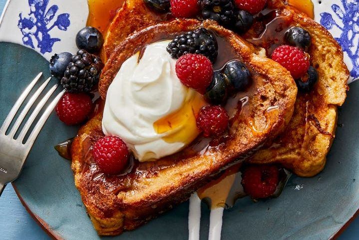

French Toast

French toast is a delectable dish where bread is soaked in egg yolk and fried until golden brown
Ingredients
- Bread
- Eggs
- Milk
- Pepper & Salt
Steps
- Put 2 eggs into into a bowl with some pepper & salt and beat
- Add a dash of milk and continue to beat until mixed
- Cut slice of bread in half and dip in egg batter
- Fry battered egg until golden brown
- Enjoy!